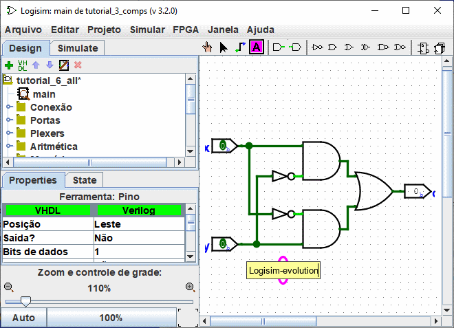
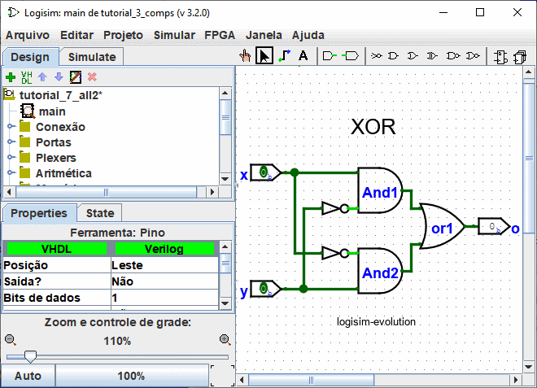

Anterior: Passo 2: Acrescentar conexões
Passo 3: Acrescentar texto
Acrescentar texto ao circuito não será necessário para fazê-lo funcionar; mas se você quiser mostrar o seu circuito para alguém (como a um professor), então, alguns rótulos ajudarão a comunicar os propósitos de diferentes partes do seu circuito.
Selecionar a ferramenta de "texto" ( ). Você poderá clicar em um pino de entrada e começar a escrever para dar-lhe um rótulo. (É melhor clicar diretamente no pino de entrada do que clicar onde você quiser colocar o texto, porque o rótulo irá mover-se junto com o pino). Você poderá fazer o mesmo para o pino de saída. Ou você poderá simplesmente clicar em qualquer outro lugar e começar a escrever para colocar um rótulo ali.
). Você poderá clicar em um pino de entrada e começar a escrever para dar-lhe um rótulo. (É melhor clicar diretamente no pino de entrada do que clicar onde você quiser colocar o texto, porque o rótulo irá mover-se junto com o pino). Você poderá fazer o mesmo para o pino de saída. Ou você poderá simplesmente clicar em qualquer outro lugar e começar a escrever para colocar um rótulo ali.

Muitos componentes aceitam rótulos, por exemplo, se você clicar em uma das portas, também poderá atribuir um rótulo

É possível modificar um rótulo de várias outras maneiras.
-
Com um duplo clique no componente com a ferramenta Edição(
Com um clique em uma rótulo com a ferramenta "texto"(
Modificando a propriedade "rótulo"na tabela de atributos.

Próximo: Passo 4: Testar seu circuito